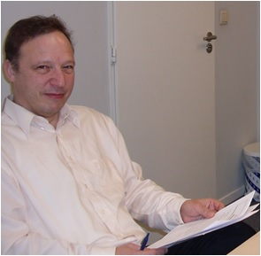

To contribute to a better world by giving people and organizations support their growth and cooperation.
Here we want to work on the development of tools, optimizing processes,
and offering services to learn about their talents or those of employees,
optimally utilize and develop it further, finally,
we want all the knowledge and insights divide by both publications and the training of advisors and other service providers.

Lieven Cornelis - general manager
at Alert Managment Consultants
Continuous improvement and innovation is central to our activities.
Increasing the quality of content and refinement of reporting in accordance with specific customer inquiries or specific goals that we set ourselves is an ongoing endeavor.
Focus on developing products that have a long life cycle, in developing training that can last long or uncomfortable look recyclable into new courses.
Build a relationship of trust with customers.
Find how we can link or embed our own instruments into other certification models or processes. Investigate whether use of current instruments to study market potential is worth the investment.